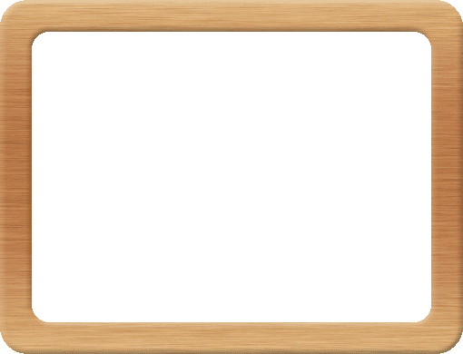

Ｆｕｊｉｓｈｉ ｋｉｓｈｉｍａ ｎｄｕｓｔｒｉａｌ ｐａｒｋ ｏｏｐｅｒａｔｉｖｅ ｓｏｃｉｅｔｙ
| メインテーマ『発展』 | ||||||||
| 発展のイメージ----⇒で表現 | ||||||||
| 現在、工業団地には３３社＋２社に組合を入れ、３６本の矢印。 | ||||||||
| 工業団地全社で共に発展という願いを込めて考えました。 | ||||||||
| サブテーマ『和』 | ||||||||
| 和のイメージ---円を主体とした構成。 | ||||||||
| 工業団地全社の和、各企業の和、地域との和を広げる。 | ||||||||
| 『地域色』 | ||||||||
| 白抜きの富士市----団地からみた富士山 | ||||||||
| 以上、３点から構成しました。 | ||||||||
| 平成４年６月 | ||||||||
| 制作 株式会社スギヤマ 杉山清司 | ||||||||